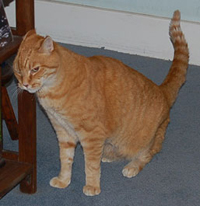

Sid: Sid Byrahk is a freelance author living in Geography City, CA. He and his roommate Stephen are currently running low on groceries, but neither wishes to go shopping.

Stephen: Sid’s roommate, Stephen Greeter, is a vexillographer. He too is disinclined to end the grocery shortage by shopping. Stephen was recently elected Czar of Geography City.
Liln: Liln Bemular is a close friend of Sid and Stephen’s. She is a professional jeweler and is dating Jame Palrose. Sid and Stephen frequently attempt to get Liln to assist with their various schemes, and she is generally reluctant to.
York Funhaven: York Funhaven works at a gaming store. He was originally Sid’s friend, but has bonded with the group as a whole. York fancies himself something of a group leader, but the rest of the group hasn’t really noticed that, and so has not responded to his power play.
Jame: Jame Palrose is a restaurateur. He is decidedly the least “zany” of the bunch, and has only recently met any of them. He began dating Liln not too long ago, and was introduced by her to Sid, Stephen, &c.

Aorist: Aorist is that guy who no one knows if he has a job or is independently wealthy or what, but he’s frequently around, and pleasant enough. Aorist often tries to be helpful, which involves being complicit in various of his friends’ schemes.
First Folio: First Folio was so-named because of her parents’ love of Shakespeare. First Folio went to college with York at Center of the Earth University (Moon Campus). She keeps kosher and has been known to use some powers of divination.
Omicron: Omicron is Sid’s pet cat. He used to be Sid and Stephen’s, but Stephen lost his half in a bet about formica.

This page covers the characters of Terror Island. For information about the cast who portray them, see our Cast page.